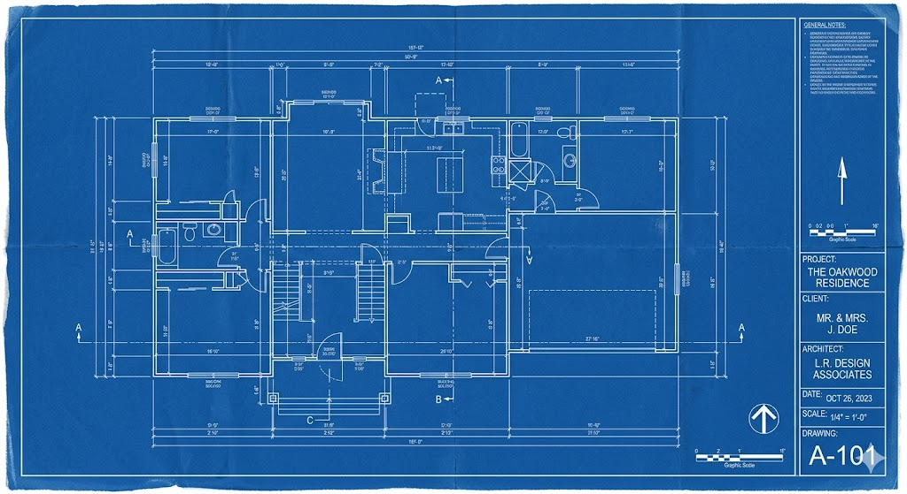

Appealing to the Modern Product Designer
What designers want from employers and why design thinking still matters.
August 31, 2022

“I'm not having any luck finding a product designer to fill this role. Most of them don't even engage with me. Do you have any advice on how I might be able to reach through to designers?”
This wasn't the first time I've heard from a recruiter about how hard it's been to hire designers. People — not just designers — are wary in today's world. The pandemic has made them more risk-averse in general; they're holding on tight to their current jobs after seeing headlines of mass layoffs and market plunges. We're also in the last quarter of the year where holidays are coming in hot and more people are riding it out with as little stress as possible.
No matter the state of the world or time of the year, most designers are still people with a strong resolve. They'll roll up their sleeves for a good challenge that brings impact and fulfillment. There's a catch though: the conditions must be right for them. I've spoken to many designers throughout the years, and between all of their insights and my own lived experience, I've got a pretty good idea of what keeps us happy.
Note: the product designer that I'm talking about is the individual that some companies, especially startups, hire to handle all aspects of designing a product or service (User Experience + Interaction + Visual Design, Information Architecture, and some elements of Research).
Alignment on the Product Design Role
There are companies that still only see designers as slingers of fancy pixel arrangements, employing them mainly to polish up a solution long after it's been decided without their two cents. But the most successful software companies today have already done away with this mindset; they know that the secret sauce of developing critically acclaimed products and services is the banding together of Product Management, Design, and Engineering, with Design playing an enterprising and strategic role.
In this model, Design carries its weight way earlier in the process. Designers probe a situation, ask thought-provoking questions, build understanding of the current systems in place, and with their Product Management partners, figure out how they'll go about addressing the problem. This happens before anyone even thinks about pretty wireframes.
In fact, the “designing” takes up the smallest portion of my working time. Most of my time is spent talking to people. I'm constantly collaborating with others to catch up on domain knowledge, facilitating research sessions, and sharing and negotiating ideas that eventually inform what the designs will be today and beyond. All of this is in pursuit of delightful user experiences and services that bring business value. The employers who understand this get brownie points from us.
An Open Attitude Towards Leading with Design Thinking
There are lots of Design Thinking resources out there that go really deep. To put it simply, Design Thinking is a way to problem-solve for big, complex challenges and it starts with getting to know the users and their needs. It's investigative; efforts are made to gain perspectives from users and stakeholders, and to identify the magnitude of the problem. It's collaborative; different lenses come together to interpret needs and conceive ideas. It's iterative; ideas are put through the wringer and refined until we feel good enough about them being in the wild. Design Thinking is all about de-risking.
Designers shudder at the thought of companies skimping on ways to reel in actual user sentiments. If there isn't even a sliver of time spent on researching users, their quirks, and aspirations, then building products could come at an unnecessarily high cost. Without some form of feedback and validation from users or their proxies, it's harder to build confidence in a solution. This could lead to companies racking up insane amounts of tech debt that could've been avoided, spending extra money to fix things, or unhappy customers using a subpar service.
Companies don't need to have fully mature Design Thinking implemented in order to attract designers, but designers want to see action; even baby steps to show that the company is taking product development and user happiness seriously. Designers are happy when they have allies who fight to hold even the smallest space for this ideology.
Personally, these are my big design-specific nonnegotiables but this isn't to say that they're the only things designers are after. Let's not forget about the bare minimum like a good work-life balance, competitive compensation, a place that values the well-being of their people — you know, the things that most people care about. But it'll be easier to figure out why designers are staying put or packing their bags.